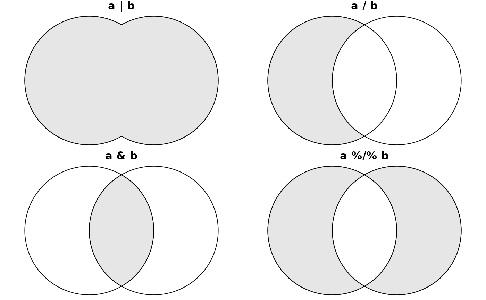
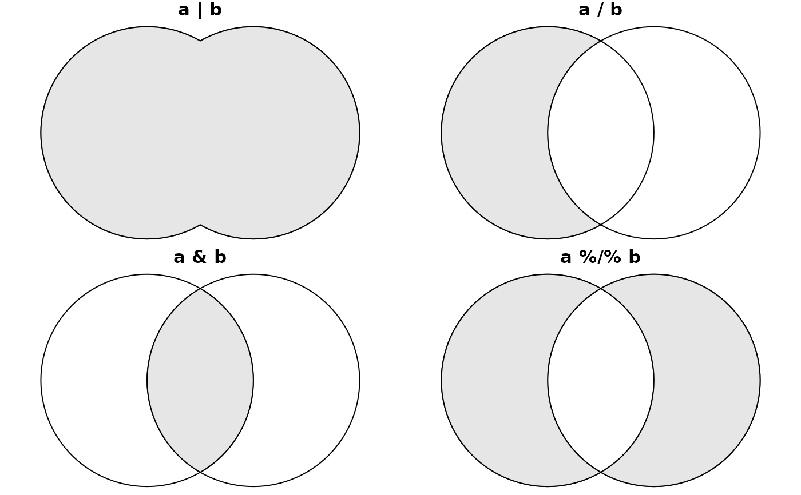

Arithmetic operators for simple feature geometries
Details
in case e2 is numeric, +, -, *, /, %% and %/% add, subtract, multiply, divide, modulo, or integer-divide by e2. In case e2 is an n x n matrix, * matrix-multiplies and / multiplies by its inverse. If e2 is an sfg object, |, /, & and %/% result in the geometric union, difference, intersection and symmetric difference respectively, and == and != return geometric (in)equality, using st_equals. If e2 is an sfg or sfc object, for operations + and - it has to have POINT geometries.
If e1 is of class sfc, and e2 is a length 2 numeric, then it is considered a two-dimensional point (and if needed repeated as such) only for operations + and -, in other cases the individual numbers are repeated; see commented examples.
It has been reported (https://github.com/r-spatial/sf/issues/2067) that certain ATLAS versions result in invalid polygons, where the final point in a ring is no longer equal to the first point. In that case, setting the precisions with st_set_precision may help.
Examples
st_point(c(1,2,3)) + 4
#> POINT Z (5 6 7)
st_point(c(1,2,3)) * 3 + 4
#> POINT Z (7 10 13)
m = matrix(0, 2, 2)
diag(m) = c(1, 3)
# affine:
st_point(c(1,2)) * m + c(2,5)
#> POINT (3 11)
# world in 0-360 range:
if (require(maps, quietly = TRUE)) {
w = st_as_sf(map('world', plot = FALSE, fill = TRUE))
w2 = (st_geometry(w) + c(360,90)) %% c(360) - c(0,90)
w3 = st_wrap_dateline(st_set_crs(w2 - c(180,0), 4326)) + c(180,0)
plot(st_set_crs(w3, 4326), axes = TRUE)
}
#> Warning: GDAL Error 1: TopologyException: side location conflict at 16.123485685639235 -84.347832314219417. This can occur if the input geometry is invalid.
#> Warning: GDAL Error 1: TopologyException: side location conflict at 16.123485685639235 -84.347832314219417. This can occur if the input geometry is invalid.
 (mp <- st_point(c(1,2)) + st_point(c(3,4))) # MULTIPOINT (1 2, 3 4)
#> POINT (4 6)
mp - st_point(c(3,4)) # POINT (1 2)
#> POINT (1 2)
opar = par(mfrow = c(2,2), mar = c(0, 0, 1, 0))
a = st_buffer(st_point(c(0,0)), 2)
b = a + c(2, 0)
p = function(m) { plot(c(a,b)); plot(eval(parse(text=m)), col=grey(.9), add = TRUE); title(m) }
o = lapply(c('a | b', 'a / b', 'a & b', 'a %/% b'), p)

par(opar)
sfc = st_sfc(st_point(0:1), st_point(2:3))
sfc + c(2,3) # added to EACH geometry
#> Geometry set for 2 features
#> Geometry type: POINT
#> Dimension: XY
#> Bounding box: xmin: 2 ymin: 4 xmax: 4 ymax: 6
#> CRS: NA
#> POINT (2 4)
#> POINT (4 6)
sfc * c(2,3) # first geometry multiplied by 2, second by 3
#> Geometry set for 2 features
#> Geometry type: POINT
#> Dimension: XY
#> Bounding box: xmin: 0 ymin: 2 xmax: 6 ymax: 9
#> CRS: NA
#> POINT (0 2)
#> POINT (6 9)
nc = st_transform(st_read(system.file("gpkg/nc.gpkg", package="sf")), 32119) # nc state plane, m
#> Reading layer `nc.gpkg' from data source
#> `/home/runner/work/_temp/Library/sf/gpkg/nc.gpkg' using driver `GPKG'
#> Simple feature collection with 100 features and 14 fields
#> Geometry type: MULTIPOLYGON
#> Dimension: XY
#> Bounding box: xmin: -84.32385 ymin: 33.88199 xmax: -75.45698 ymax: 36.58965
#> Geodetic CRS: NAD27
b = st_buffer(st_centroid(st_union(nc)), units::set_units(50, km)) # shoot a hole in nc:
plot(st_geometry(nc) / b, col = grey(.9))
(mp <- st_point(c(1,2)) + st_point(c(3,4))) # MULTIPOINT (1 2, 3 4)
#> POINT (4 6)
mp - st_point(c(3,4)) # POINT (1 2)
#> POINT (1 2)
opar = par(mfrow = c(2,2), mar = c(0, 0, 1, 0))
a = st_buffer(st_point(c(0,0)), 2)
b = a + c(2, 0)
p = function(m) { plot(c(a,b)); plot(eval(parse(text=m)), col=grey(.9), add = TRUE); title(m) }
o = lapply(c('a | b', 'a / b', 'a & b', 'a %/% b'), p)

par(opar)
sfc = st_sfc(st_point(0:1), st_point(2:3))
sfc + c(2,3) # added to EACH geometry
#> Geometry set for 2 features
#> Geometry type: POINT
#> Dimension: XY
#> Bounding box: xmin: 2 ymin: 4 xmax: 4 ymax: 6
#> CRS: NA
#> POINT (2 4)
#> POINT (4 6)
sfc * c(2,3) # first geometry multiplied by 2, second by 3
#> Geometry set for 2 features
#> Geometry type: POINT
#> Dimension: XY
#> Bounding box: xmin: 0 ymin: 2 xmax: 6 ymax: 9
#> CRS: NA
#> POINT (0 2)
#> POINT (6 9)
nc = st_transform(st_read(system.file("gpkg/nc.gpkg", package="sf")), 32119) # nc state plane, m
#> Reading layer `nc.gpkg' from data source
#> `/home/runner/work/_temp/Library/sf/gpkg/nc.gpkg' using driver `GPKG'
#> Simple feature collection with 100 features and 14 fields
#> Geometry type: MULTIPOLYGON
#> Dimension: XY
#> Bounding box: xmin: -84.32385 ymin: 33.88199 xmax: -75.45698 ymax: 36.58965
#> Geodetic CRS: NAD27
b = st_buffer(st_centroid(st_union(nc)), units::set_units(50, km)) # shoot a hole in nc:
plot(st_geometry(nc) / b, col = grey(.9))